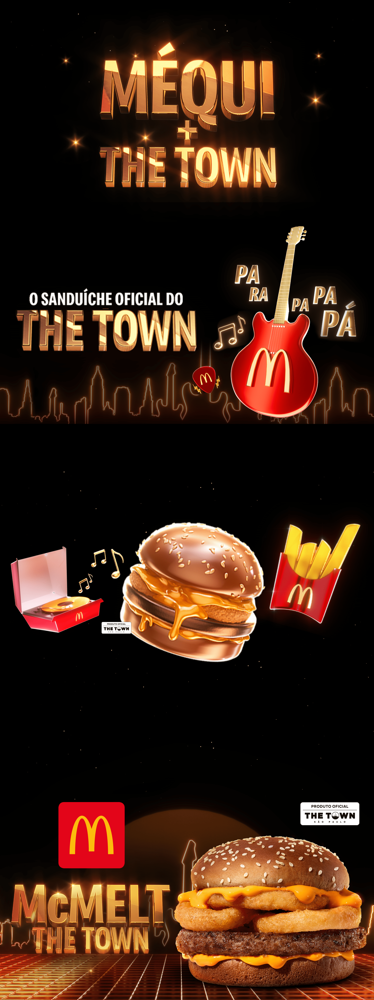
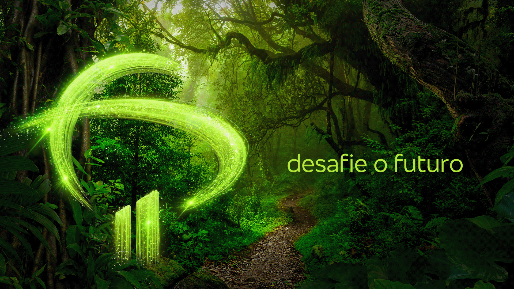
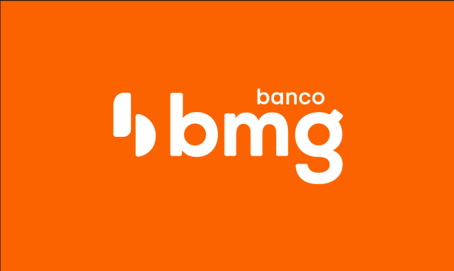
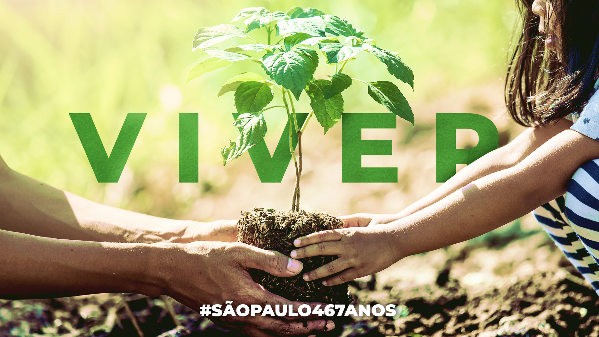

Design
Crafting visually compelling graphics that communicate your brand's message with clarity and creativity.
Hey there! Enjoy my portfolio, and let's be real—you could totally help me make it even bigger.
Crafting visually compelling graphics that communicate your brand's message with clarity and creativity.
Bringing visuals to life with smooth animations and engaging motion graphics.
Cutting, refining, and enhancing footage to create dynamic and impactful visual stories.
Shaping the visual identity of projects through creative vision and strategic design.
Enhancing mood and storytelling with professional color correction and grading.
Perfecting images with expert retouching, color adjustments, and creative enhancements.
Méqui


Bmg

Tatuapé Complex.
São Paulo's Anniversary

Qualidy

Hi! I’m Luka — a creative with over seven years of experience in advertising, and a background in Graphic Design and Audiovisual Production.
Cinema is my greatest passion. While my experience so far has been mostly in independent and personal projects, each one has been an opportunity to grow, adapt, and explore new ways of creating with the tools available. I believe that creativity often thrives within constraints.
I started out in game design, inspired by my love for storytelling and immersive visual worlds. Since then, I’ve expanded into motion design, post-production, and photography — always seeking new ways to express ideas and emotions.
In the Studies section, you’ll find a selection of college projects and experiments that reflect my journey so far. I learn something new every day, and I see that as one of the most exciting parts of being a creator: there’s always more to discover, more to refine, and more to stories to tell.